Plug to http://nhuthehoang.com/ for telling me about GCP and Geoserver.
Part 1: https://www.davidjleifer.com/blogs/part1.html
Part 3: https://www.davidjleifer.com/blogs/part3.html
Part 4: https://www.davidjleifer.com/blogs/part4.html
Part 5: https://www.davidjleifer.com/blogs/part5.html
Part 6: https://www.davidjleifer.com/blogs/part6.html
Part 7: https://www.davidjleifer.com/blogs/part7.html
Part 8: https://www.davidjleifer.com/blogs/part8.html
Part 9: https://www.davidjleifer.com/blogs/part9.html
This week we will be adding steez (see style) to these rasters by exporting an SLD using QGIS 3.X.
For this step, we will need to download and install QGIS 3.X from the source:
Download
QGIS
QGIS
in OSGeo4W: In the installer choose Desktop Express Install and
select QGIS to install the latest release. To get…qgis.org
Unzip the file and follow the instructions to install QGIS 3.X on your computer.
Open up QGIS 3.X and add one of the precipitation rasters for the state of Oregon by clicking “Layer” on the top menu, hovering over “Add Layer”, and clicking on “Add Raster Layer…” The rasters have been made available at this link in a zipped package: https://drive.google.com/file/d/1Xcw_zM1kfQiXoHbr5KuaBMaKReCAr7mt/view?usp=sharing
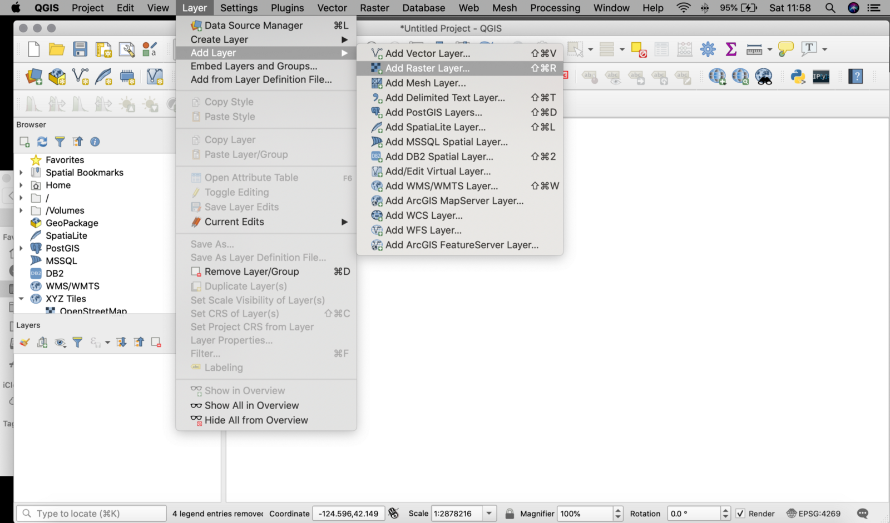
Next, click on the “…” and navigate to the unzipped raster. This is a GeoTIFF and has the file extension .tiff.
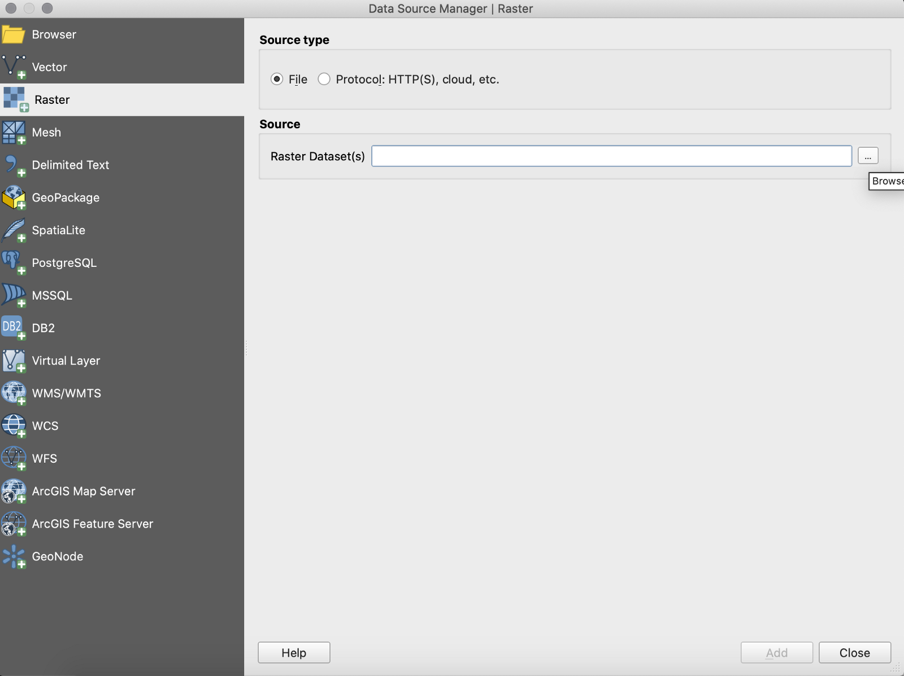
Click “Add” then “Close”. This should bring in the GeoTIFF into QGIS:
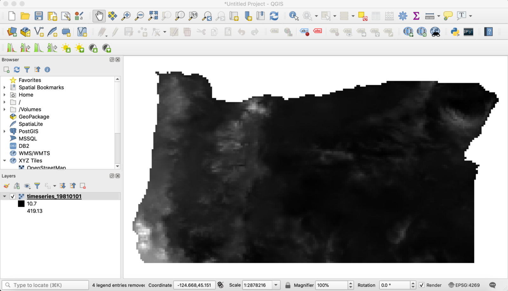
Now we will need to style the raster. Right click on the raster and select properties in the drop down menu. This screen will pop up:
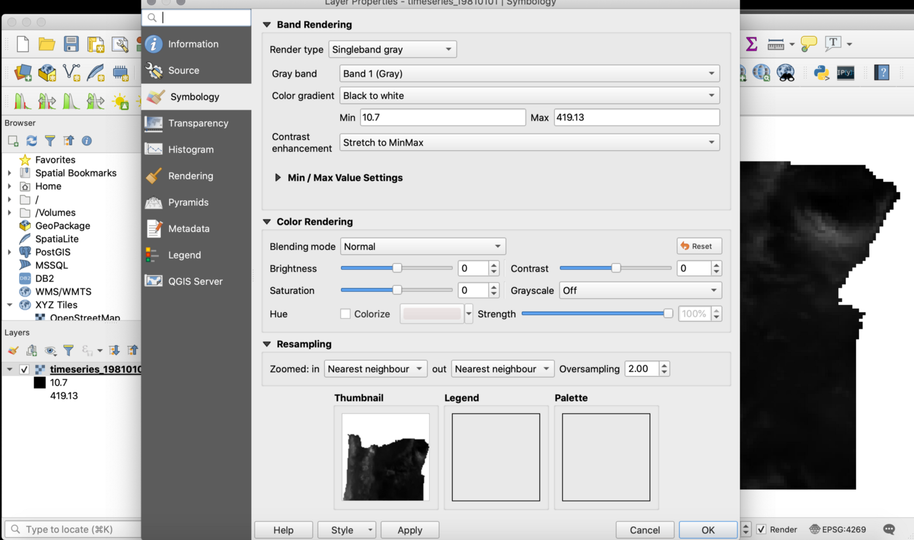
Under “Render type” click the “Singleband gray” button and then click “Singleband pseudocolor”. That will bring you to this screen:
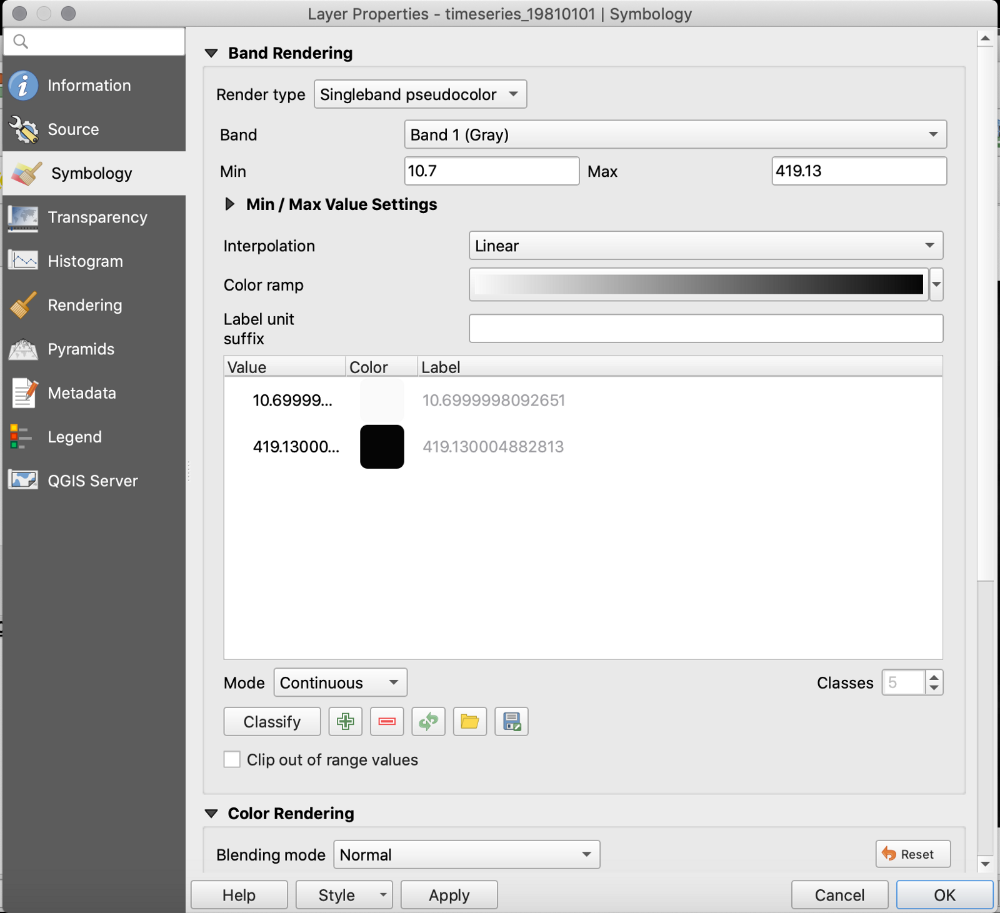
Click the downward pointing arrow under “Color ramp”. Hover over “All Color Ramps” and select “Blues”. Click “Classify”, it should look like this:
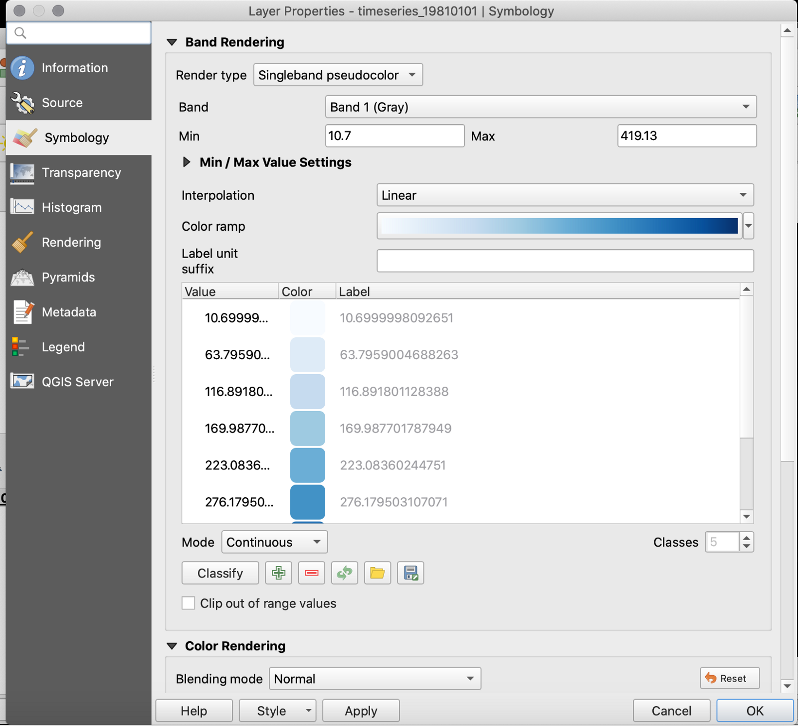
Now click “OK” and view the styled raster:
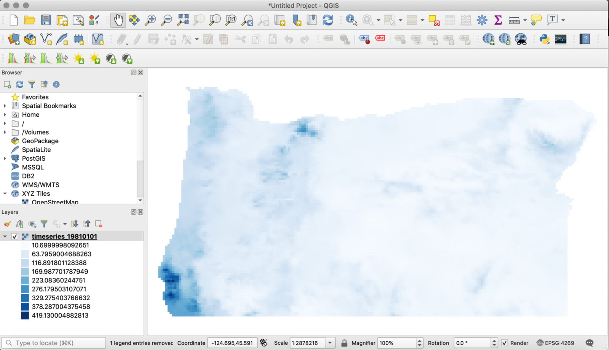
Right click on the layer and select properties again. Now select the “Styles” button in the lower left hand corner:
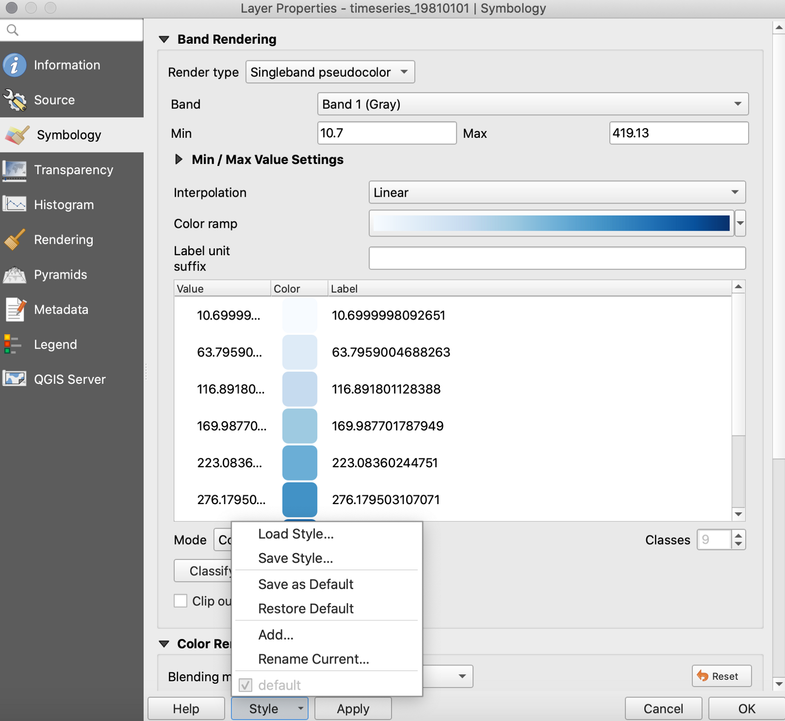
Hit “Save Style…” then type a name for your style and make sure to change the file extension to “SLD”. Save the file.
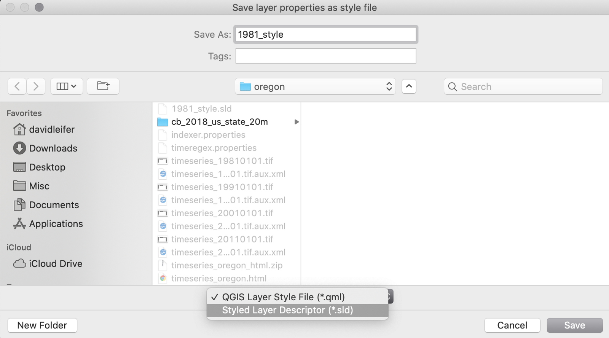
Now open the .sld in a text editor. Sublime Text can be downloaded here: https://www.sublimetext.com/3
The .sld contains XML code that we will copy onto Geoserver for our style.
On your Geoserver admin page, click “Styles” which is located in the left menu under “Data”. Then click “Add a new style”:
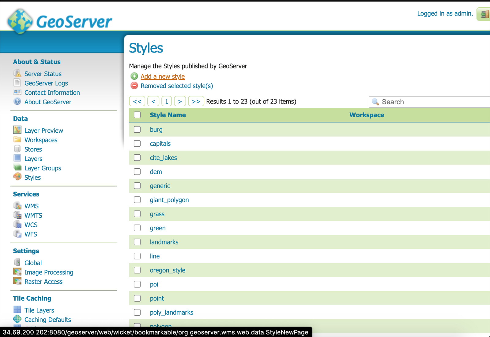
Fill out the “Name” section and copy the following code into the space at the bottom:
<?xml version="1.0" encoding="UTF-8"?>
<StyledLayerDescriptor xmlns="http://www.opengis.net/sld" xmlns:sld="http://www.opengis.net/sld" version="1.0.0" xmlns:ogc="http://www.opengis.net/ogc" xmlns:gml="http://www.opengis.net/gml">
<UserLayer>
<sld:LayerFeatureConstraints>
<sld:FeatureTypeConstraint/>
</sld:LayerFeatureConstraints>
<sld:UserStyle>
<sld:Name>timeseries_19810101</sld:Name>
<sld:FeatureTypeStyle>
<sld:Rule>
<sld:RasterSymbolizer>
<sld:ChannelSelection>
<sld:GrayChannel>
<sld:SourceChannelName>1</sld:SourceChannelName>
</sld:GrayChannel>
</sld:ChannelSelection>
<sld:ColorMap type="ramp">
<sld:ColorMapEntry color="#f7fbff" quantity="10.6999998092651" label="10.6999998092651"/>
<sld:ColorMapEntry color="#deebf7" quantity="63.7959004688263" label="63.7959004688263"/>
<sld:ColorMapEntry color="#c6dbef" quantity="116.891801128387" label="116.891801128387"/>
<sld:ColorMapEntry color="#9ecae1" quantity="169.987701787949" label="169.987701787949"/>
<sld:ColorMapEntry color="#6baed6" quantity="223.08360244751" label="223.08360244751"/>
<sld:ColorMapEntry color="#4292c6" quantity="276.179503107071" label="276.179503107071"/>
<sld:ColorMapEntry color="#2171b5" quantity="329.275403766632" label="329.275403766632"/>
<sld:ColorMapEntry color="#08519c" quantity="378.287004375458" label="378.287004375458"/>
<sld:ColorMapEntry color="#08306b" quantity="419.130004882813" label="419.130004882813"/>
</sld:ColorMap>
</sld:RasterSymbolizer>
</sld:Rule>
</sld:FeatureTypeStyle>
</sld:UserStyle>
</UserLayer>
</StyledLayerDescriptor>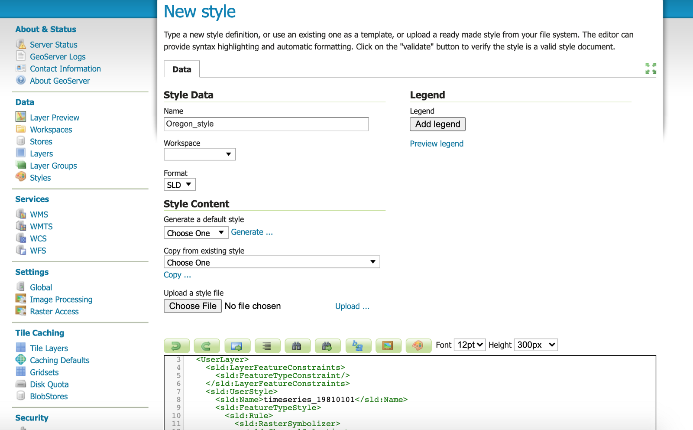
Click the “Validate” button, then the “Apply” button, and finally the “Submit” button. In the “Style” section, we should be able to see our new style as the name we submitted.
Now we need to apply the newly created style to our previously uploaded timeseries raster layer. Click the “Layers” button under “Data”. This will bring you to this screen:
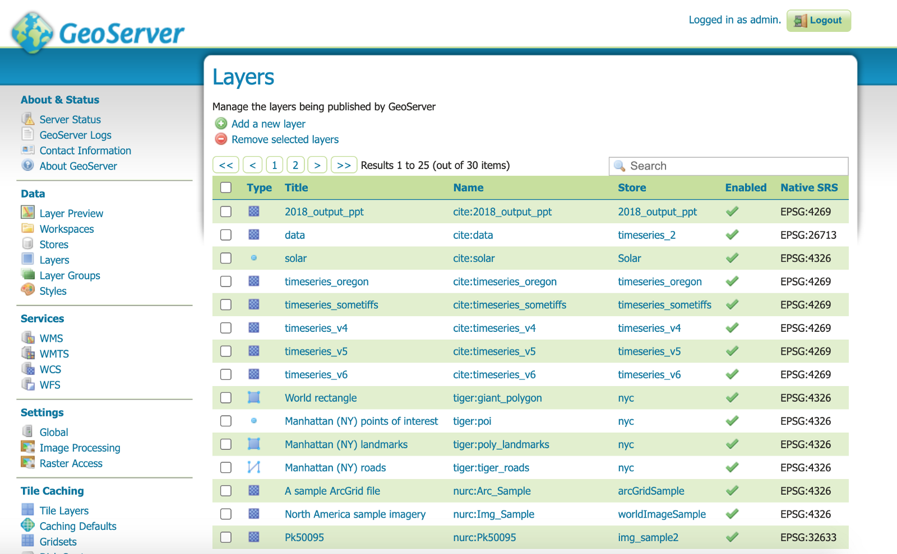
Click the “timeseries_oregon” layer, then click the “Publishing” tab. Change the “Default Style” to the “oregon_style” that we just created. Under “Available Styles” move the “oregon_style” to the right. It should look like this:
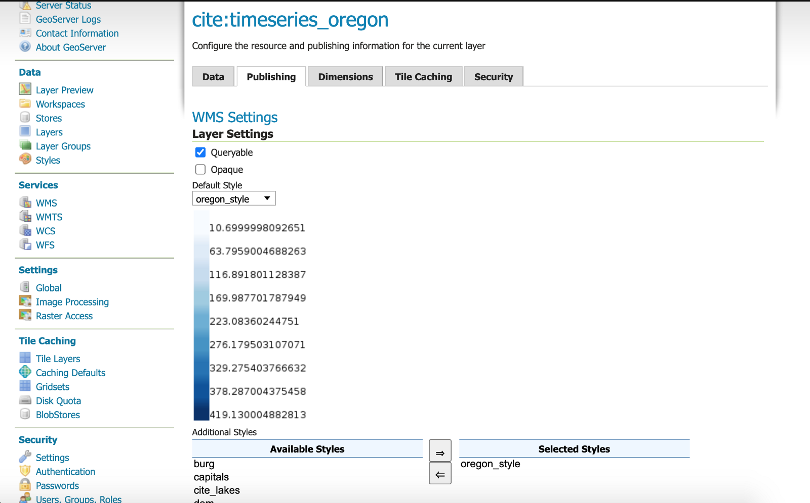
Click “Save” at the bottom of the page. Now point your browser to your HTML file created in Part 1:
http://xx.xx.XXX.XXX:8080/geoserver/www/timeseries_oregon.html
It should look like this:
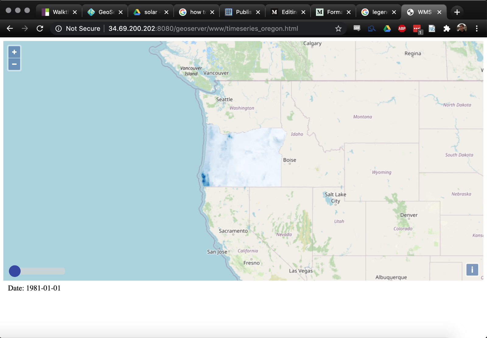
Congratulations! We have added some straight up steez to our timeseries raster! On the next post, we will add a nice legend so people will know what our symbolized raster means. It will be legendary! #rasternotmonster
Check out my other blogs here:
Part 1: https://www.davidjleifer.com/blogs/part1.html
Part 3: https://www.davidjleifer.com/blogs/part3.html
Part 4: https://www.davidjleifer.com/blogs/part4.html
Part 5: https://www.davidjleifer.com/blogs/part5.html
Part 6: https://www.davidjleifer.com/blogs/part6.html
Part 7: https://www.davidjleifer.com/blogs/part7.html
Part 8: https://www.davidjleifer.com/blogs/part8.html
Part 9: https://www.davidjleifer.com/blogs/part9.html